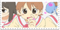
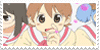
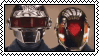
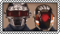

Intro
Hey
I am kerchunkle, 23, currently studying electrical, energy and computer engineering (ECEE)
Its pretty hard to find friends with antisocial tendencies while studying engineering,
so I've made this site to find some online friends! When I was like 14 I wanted to make
a site like this but now that I'm a little more technically proficient I think its a
great time to start.
I plan on this site being a little reservoir for my art, music, journal entries, uh, dream logs, and ECT!
I've never really been a fan of when people post their artwork on non anonymous social media because it really
seems like a way to just brag and enflate their own egos instead of sharing something for the love of the craft.
So my this will be my anonymous, non braggy art repo!


 

 
